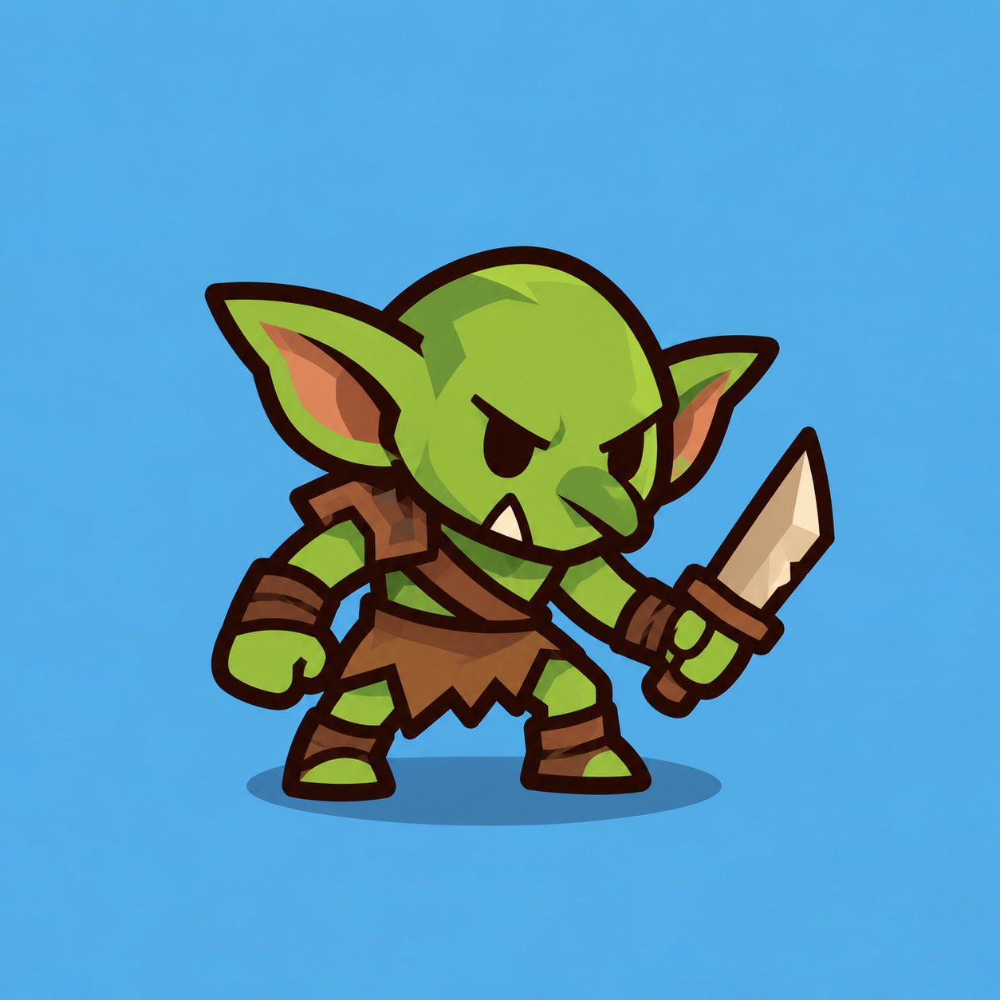
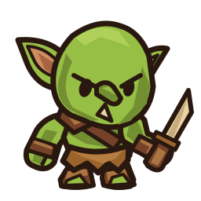

Сравнение с принятым Archer

Общий тёмный outline, плоские заливки, крупная голова и короткие конечности.
Первый вариант для ручной приёмки. Отрисован вручную SVG-кодом: 7 отдельных частей, canvas 256×256, прозрачный фон.


77 / 65 / 56 px полного canvas при 6 / 7 / 8 столбцах. Сохраняем ширину старого enemy.svg (108) и коэффициент Enemy.follow_route. Окончательная интеграция и позиционирование будут позже.
На экране телефона шириной 390 px
30–42 физических px полного canvas. Здесь эти размеры показаны без увеличения.
Общий тёмный outline, плоские заливки, крупная голова и короткие конечности.
| SVG part | Pivot | Слой |
|---|
Уши, нос и лицо входят в голову; кисти в руки, ботинки в ноги. Кинжал отдельный. Голова скрывает плечо передней руки, кинжал перед кистью. Скрытые округлые окончания перекрываются.
SVG-art принят. Rig и анимации Goblin — отдельный Godot preview. Gameplay integration — после приёмки анимаций.